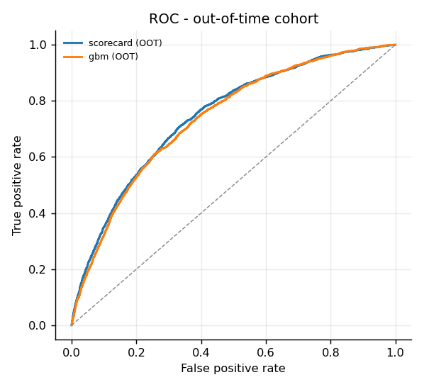
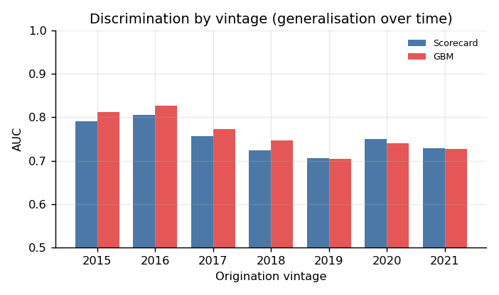

331,122 Freddie Mac mortgages · 7 vintages (2015–2021) · out-of-time AUC 0.7462
Move the inputs and the scorecard re-scores the loan in the browser. Nothing is sent anywhere: the fitted weights are shipped as a 16 KB parameter file and the arithmetic happens locally. The model is a logistic regression on weight-of-evidence bins, fitted on the 2015–2018 cohort and never shown the 2020–2021 loans it is validated on.
90+ days past due, or a credit-event zero-balance code.
—Approval rate and the bad rate among approved loans, measured on the out-of-time cohort of 99,133 loans. This is the same table the model report prints, read at whichever cut-off you pick.
Measured on loans the model never saw. The validation cohort (2019) scores lower than the out-of-time cohort (2020–2021), which is unusual and is one reason the out-of-time set was kept sealed rather than tuned against.
| Model | Split | n | Bad rate | AUC | Gini | KS |
|---|---|---|---|---|---|---|
| Scorecard | train | 183,668 | 2.64% | 0.7805 | 0.5611 | 0.4187 |
| Scorecard | valid | 48,321 | 5.15% | 0.7050 | 0.4100 | 0.3025 |
| Scorecard | out-of-time | 99,133 | 2.02% | 0.7462 | 0.4924 | 0.3754 |
| GBM | train | 183,668 | 2.64% | 0.7993 | 0.5985 | 0.4514 |
| GBM | valid | 48,321 | 5.15% | 0.7040 | 0.4080 | 0.3021 |
| GBM | out-of-time | 99,133 | 2.02% | 0.7381 | 0.4762 | 0.3542 |
Both come out of the pipeline, not out of this page.

